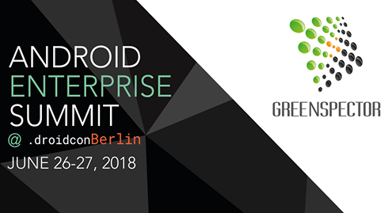
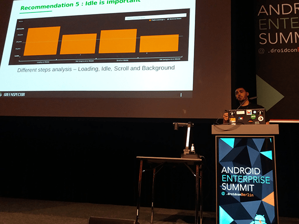
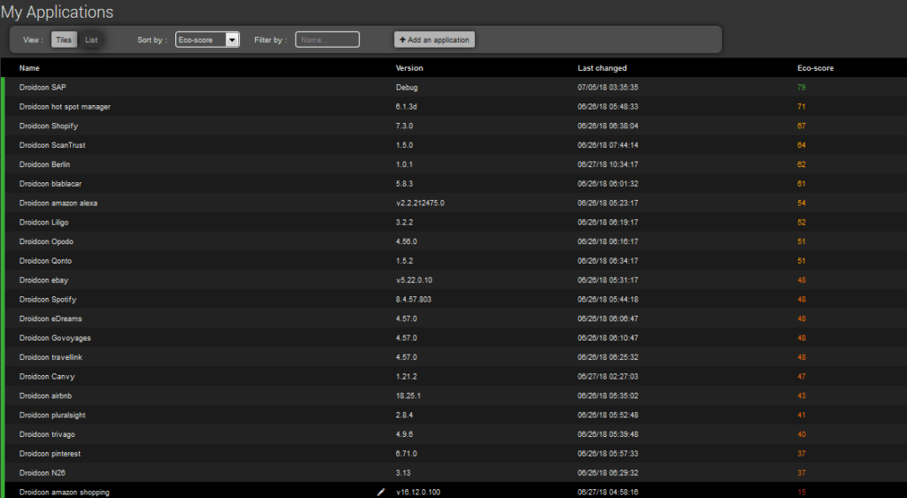
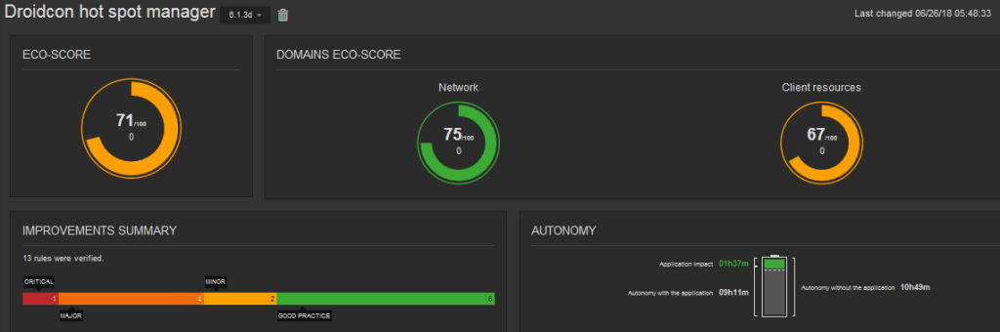

Dans le cadre du DroidCon Berlin, GREENSPECTOR était sponsor Bronze du Android Enterprise Summit et a pu valoriser ses retours d’expérience sur la prise en compte des bonnes pratiques dans le cadre du développement d’applications et de la bonne gestion de l’autonomie sur les flottes de smartphones Android.

Les 5 recommandations présentées lors de notre intervention sont liées à des projets clients grands comptes sur des flottes de taille conséquente :
- 1) Le logiciel est « matériel-dépendant » et la consommation peut être variable à fonctionnalité équivalente pour un use case donné. Une mesure apporte un éclairage et évite les bugs de consommation « matériel » avant tout choix et tout déploiement. Exemple donné sur le retour d’expérience SNCF dans l’aide au choix de matériel.
- 2) Le choix des MDM (Mobile Device Management) est important à benchmarker en termes de consommation de ressources et d’impact d’autonomie car en fonction de la solution déployée, la couche de gestion MDM entraîne des consommations variables d’un éditeur à l’autre sur mobile ou tablette. Retour d’expérience sur la comparaison entre Mobile Iron, Air Watch et un mobile sans MDM.
- 3) Le choix du framework de développement impacte également les ressources : le benchmarker simplement et très en amont aide à trouver la meilleure solution énergie-ressources. Retour d’expérience sur la comparaison application native vs application Cordova et Cordova + Crosswalk.
- 4) Communiquer de préférence avec une bonne connectivité en la testant avant de solliciter l’échange va également considérablement réduire l’impact énergétique de chaque requête. Exemple de mesure de consommation énergétique d’un envoi en 2G et 4G.
- 5) La gestion des phases d’inactivité foreground ou background va engendrer une partie non négligeable de consommation de ressources sur le device déployé, souvent inutile, mais aussi à solliciter plus ou moins utilement les ressources backend en lien avec le device.

En marge de cette présentation, GREENSPECTOR a réalisé un benchmark des applications mobiles des partenaires DroidCon Berlin sur un scénario d’usage technique, sans entrer dans le fonctionnel de l’application. Les résultats montrent à nouveau de gros écarts sur un scénario basique. Bravo à SAP et Hot Spot Manager de Deutsche Telekom. Un peu moins d’autonomie dans l’utilisation d’Amazon Shopping !

